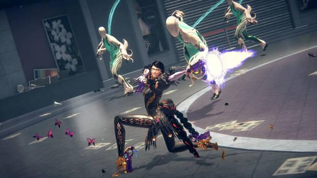
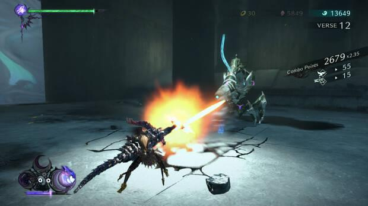
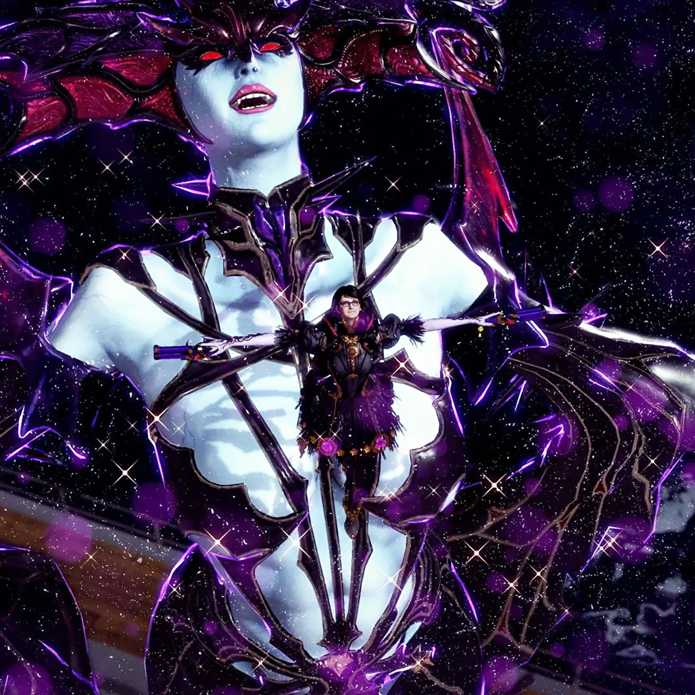

Bayonetta 3
La nueva entrega de nuestra bruja de Umbra
Esta vez, la historia nos narra cómo el Multiverso está en peligro por culpa de una entidad
cósmica interdimensional que está destruyendo infinidad de universos paralelos con sus ejércitos
de homúnculos, unos misteriosos seres creados por el hombre que no dudan en arrasar con todo lo
que se les ponga por delante. Por supuesto, esto no es algo que nuestra bruja de Umbra favorita
vaya a permitir, así que nos tocará acompañarla en un viaje repleto de acción a través de varias
realidades alternativas para detener esta amenaza.
Centrándonos ya en lo que es su jugabilidad como tal, decir que volvemos a encontrarnos ante un hack and slash
en el que nuestro objetivo no será otro que avanzar por una serie de niveles muy lineales mientras nos damos de
tortas con todo lo que salga a nuestro paso e intentamos obtener la máxima puntuación posible en cada enfrentamiento.

Por supuesto, esta es tan solo la superficie y bajo ella se esconde un sistema profundísimo que nos llevará bastantes
horas dominar. No solo hay infinidad de posibles combos y movimientos que podemos enlazar y ejecutar de diferentes maneras,
sino que también disponemos de un buen puñado de armas tremendamente originales que cambian por completo nuestra forma de jugar.
Sumadle que podemos tener dos equipadas y alternar entre ellas en mitad de una cadena de golpes, y entenderéis rápidamente el
enorme abanico de posibilidades del que disponemos para machacar a los homúnculos de las formas más estilosas, eficientes y
espectaculares posibles.

Como podréis intuir, existen algunas limitaciones, como el hecho de que mantener una invocación activa hará que se consuma poco a poco
nuestra barra de magia o que, por norma general, no nos podamos mover libremente cuando estemos dando órdenes a las criaturas.
Obviamente, tampoco podréis invocar nada si peleáis en un sitio donde no haya espacio suficiente, y si reciben suficientes golpes es
posible que perdamos el control sobre ellas y se puedan volver contra nosotros.

Articulos de Interés
Te puede interesar
Bayonetta
Bayonetta 2
Rivalidad entre Nintendo y Sega
Conclusion